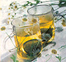

• chamomile
• celeryseed
• ginkgo (ginkgo leaves are not a food) for apigenin
• skullcap (not a food) for baicalein
• hops, barberry, goldenseal, goldthread, Oregon grape, yellowroot (none of these are foods) for berberine
• boswellia (not a food) for boswellic acid
• rhubarb, currant , and green tea for catechin
• green tea, cabbage, and chives for kaempferol
• clove, rosemary, thyme, sage, lavender, marjoram and ginseng
• cardamom, ginger and turmeric for curcumin
• feverfew (not a food)
· rosemary, sage, and thyme for ursolic acid
One bottle of 200mg-dose Celebrex (60 pills) costs between $150 and $200. A 60-pill bottle of 25mg-dose Vioxx will run you $100 to $125. Sales of both drugs are expected to reach $5 billion annually by 2003.
|
 |
|
|